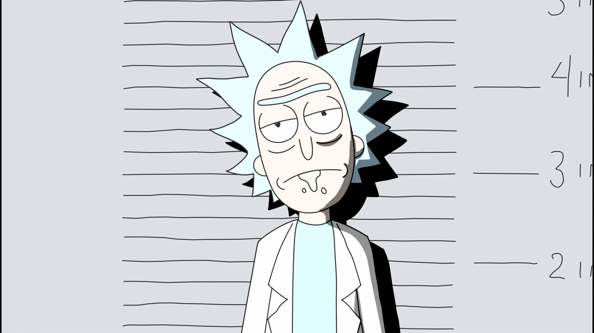

Vikings
A série retrata Ragnar como um fazendeiro que alcança a fama por seus ataques bem-sucedidos na Inglaterra e, mais tarde, se torna um Rei escandinavo, com o apoio de sua família e colegas guerreiros: seu irmão Rollo, seu filho Bjorn Flanco de Ferro, e suas esposas, a escudeira Lagertha e a princesa Aslaug.
leia mais.Colin em Preto e Branco
Criada por Michael Starrbury e Ava DuVernay, Colin em Preto e Branco é uma série original da Netflix que conta a história real de Colin Kaepernick (Jaden Michael), ex-jogador de futebol americano que atuou no San Francisco 49ers. Narrada pelo próprio atleta, a produção acompanha sua adolescência e seus anos de ensino médio, bem como o início de sua carreira esportiva na Califórnia. Adotado pelo casal Teresa (Mary-Louise Parker) e Rick Kaepernick (Nick Offerman), Colin encara uma jornada nada fácil como uma criança negra que cresce no seio de uma família branca. Mas foram essas experiências que o levaram a se tornar ativista. Em 2016, Colin ganha maior destaque nos EUA depois que se recusa a levantar durante o hino nacional, ficando de joelhos em repúdio ao tratamento que a comunidade negra recebe no país. O gesto influencia outros jogadores e gera muitas discussões por lá, inclusive envolvendo o ex-presidente Donald Trump.
leia mais.Umbrella Academy

Com a morte do pai, irmãos com poderes extraordinários se reencontram e descobrem surpreendentes segredos de família além de uma ameaça iminente à humanidade. Assista o quanto quiser. Baseada na HQ de Gerard Way vencedora do prêmio Eisner, a série indicada ao Emmy traz Elliot Page e Mary J.
leia mais.Rick e Morty
Rick Sanchez é um cientista genial e alcoólatra que foi morar com a família de sua filha Beth, uma cirurgiã cardíaca de equinos. Ele divide seu tempo entre desenvolver projetos altamente tecnológicos em seu laboratório (garagem da casa de Beth) e levar seu neto de 14 anos Morty em aventuras perigosas e surreais pelo Multiverso. Combinados com tensões preexistentes dentro da família, esses eventos causam ao sensível Morty muito angústia em casa e na escola.
Postagens Recentes
Para aqueles que são fãs da franquia Warhammer, o título Warhammer: End Times - Vermintide está em promoção por tempo limitado na Steam. Similar ao famoso Left 4 Dead, o título permite que os jogadores escolham entre cinco heróis para encarar hordas de inimigos, finalizando missões e recebendo melhorias ao longo da jornada.
leia mais.